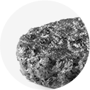
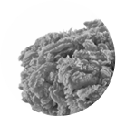
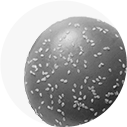
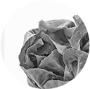
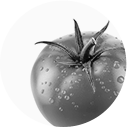
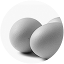
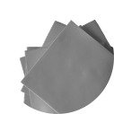
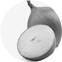

원재료 공급사에서는 좋은 재료를 준비하기 위해 엄격한 기준으로
원재료 수급 및 가공 과정을 관리하고 있습니다.
-

-

-

-

-

-

-

-

호주 청정 지역에서 키운 무방부제 & 무첨가제
100% 순 쇠고기 패티
맥도날드 쇠고기 패티는 청정한 호주 대자연에서 깨끗함을 먹고 자란 100% 순 쇠고기로만 제조되며, 어떠한 첨가물이나 보존료도 사용되지 않았습니다.
‘쇠고기 이력번호’를 통해 생산부터 유통과정까지 철저하게 확인하고 있으며, 식품 안전 기준에 맞는 쇠고기만을 사용하기 위하여 만전을 기하고 있습니다.
쇠고기 이력번호 : 수입쇠고기유통이력관리시스템 사이트에서 조회 시 쇠고기의 세부 정보
(수출국 도축장, 가공장, 수출업체 및 도축, 수입일자 등)를 확인할 수 있는 번호
불가피한 상황 발생시 일시적으로 원산지가 변동될 수 있습니다.